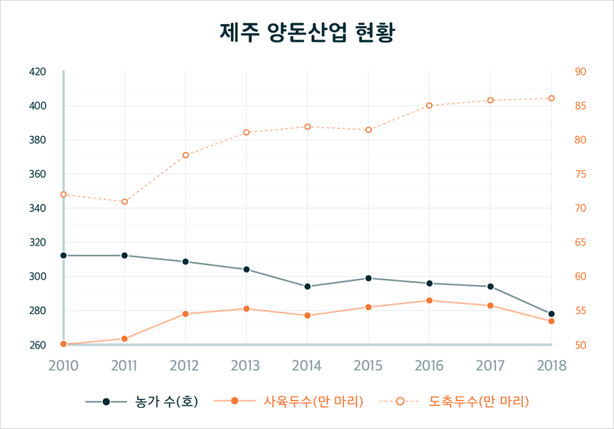

기획취재콘텐츠
- Home
- 제주라이프
- 기획취재콘텐츠
좋은 것에는 모두 이유가 있다. 제주 양돈 산업 1부새로운 글


윤기 나는 짙은 흑색에 귀가 작고 위로 쫑긋 솟은 귀여운 외모, 다부진 몸집에 짧고 탄력 있는 다리는 흔히 떠올리는 돼지의 모습과는 사뭇 다르다. 외모만 다른 게 아니다. 짙고 선명한 육색에 씹는 맛이 좋으며 고소한 맛에 많은 이들의 입맛을 사로잡는다. 제주 하면 떠오르는 대표 먹거리, 제주 흑돼지다.
제주인에게 돼지고기는 음식 재료 이상의 의미가 있다. 과거 제주에는 집집마다 우영팟(텃밭) 한쪽에 흑돼지를 사육하는 돗통이 있었다. 돗통은 흑돼지가 기거하는 돼지막과 마당, 대소변을 보는 공간으로 구성된다. 이곳에서 제주 재래 흑돼지는 채식 중심의 식생활에서 나온 섬유소와 유산균이 풍부한 인분을 섭취하며 비육됐다. 돗통시 문화는 인분과 음식물 쓰레기 처리, 퇴비의 생산, 뱀으로부터의 방어 등 생태 순환의 장치 역할을 했다. 과거 제주에서는 단백질 섭취가 어려웠는데, 이렇게 집집마다 돗통에서 키우던 재래 흑돼지는 제주 사람에게 훌륭한 단백질원이었다. 결혼식과 장례식 등 집안의 경조사는 물론, 마을의 안녕과 풍농을 기원하는 포제까지 제주의 의례 문화에는 빠지지 않고 돼지고기가 상에 올랐다. 마을의 큰 행사가 있을 때 마을 사람이 모여 흑돼지를 도축하고 고기를 나누어 먹었는데 이를 추렴이라고 불렀다. 추렴문화는 이웃, 친척, 마을 간 공동체를 강화하는 역할을 했으며 더불어 돼지고기 식문화가 발전하는 계기가 됐다.
- 돔베고기는 담백하게 쪄낸 돼지고기를 돔베(도마)위에 먹기 좋게 썰어 올리는 음식으로
제주에서 잔치가 있을 때면 빠지지 않는 전통 돼지고기 요리다. ⓒ재주상회 -
제주에서 잔치가 있을 때면 빠지지 않는 전통 돼지고기 요리다. ⓒ재주상회 -
제주를 대표하는 전통음식에는 돼지를 재료로 한 요리가 빠질 수 없다. 돼지 피와 내장을 이용한 순대(수애), 육수에 모자반을 넣고 만드는 몸국, 담백하게 쪄낸 돼지고기를 도마에 먹기 좋은 크기로 썰어내는 돔베고기, 돼지고기 육수에 국수를 말아 수육을 올려 만든 고기국수는 제주를 대표하는 전통음식이다. 제주 돼지고기를 응용한 퓨전요리도 다양하다. 흑돼지 삼겹살 김밥, 흑돼지 돈가스, 흑돼지 스튜, 수제버거와 폭챱 등 제주의 젊은 셰프들은 한식부터 양식까지 돼지고기를 활용한 다양한 메뉴를 개발해 여행객의 입맛을 사로잡는다. 제주 흑돼지는 관광객이 선호하는 제주 전통음식 1위에 선정될 정도로 제주 먹거리 여행 대표 메뉴로 꾸준히 사랑받고 있다. 육지에서 프리미엄 고기가 소고기라면, 제주에서만큼은 돼지고기가 프리미엄 고기로 그 자리를 굳건히 지키고 있다.
제주 돼지, 산업이 되다.
제주 양돈산업은 60년대 이후 명실상부 제주 경제의 큰 축을 담당하는 1차 산업으로 성장했다. 집과 마을 단위의 사육과 식문화로 존재하던 제주 돼지는 어떻게 제주의 경제를 지탱하는 산업으로 성장했을까?
그 시작에는 성이시돌목장이 있다. 1954년 한국에 온 아일랜드 출신 패트릭 제임스 맥그린치 신부는 제주 천혜의 자연환경, 돼지고기를 중심으로 발달한 공동체와 식문화를 보며 양돈업의 가능성을 발견했다. 그리하여 1960년대 초반, 새끼 돼지 2천여 마리를 서울에서 제주로 공수해 오기에 이르렀다. 이 과정에서 공군의 도움을 받아 700여 마리의 돼지를 공군 수송기에 실어 옮겼다. 이를 &꿀꿀이 공수 작전&이라고 불렀다. 제주 양돈산업 역사의 시작을 알리는 기발하며 이색적인 사건이었다. 맥그린치 신부는 이후 이시돌 협회를 설립하고 양돈 농가를 개발하는 지역개발사업, 훌륭한 품질의 돼지고기의 씨앗이 되는 종돈 분양 사업, 좋은 종돈으로 양질의 돼지를 사육할 농민 양성과 생산된 제주 돼지고기를 체계적으로 유통하는 협동조합 육성이라는 다각적인 접근을 통해 제주 양돈산업의 발판을 마련했다.
- 일러스트 : 이소현 -
현재 제주에는 50만여 두의 돼지가 사육되고 있다. 이중 흑돼지는 14만여 두로 전체 사육두수의 약 25%를 차지한다. 제주에서 생산되는 백돼지는 산업화 이후 도입된 품종으로 대부분 쫄깃한 식감을 가진 랜드레이스와 덩치가 크고 번식과 포유능력이 우수한 요크셔, 깊은 맛이 나는 듀록을 교잡해 만든 LYD(삼원교잡종)이다.
제주 재래 흑돼지는 2015년 천연기념물로 지정되어, 265두를 제주특별자치도 축산진흥원에서 사육 및 보존하고 있다. 시중에 판매되는 흑돼지는 재래 흑돼지를 분양받아 농가에서 개량종과 교배해 생산성을 높인 상업화된 흑돼지다. 제주 재래 흑돼지는 질병에 대한 저항력이 강하며 고기의 질이 우수하고 맛도 일품이지만, 지방층이 두꺼우며 생산성이 낮은 것이 단점이다. 흑돼지는 시장 출하에 알맞은 체중이 될 때까지 330일이 소요된다. 이는 일반 돼지 사육 기간 160일의 2배 이상이다. 게다가 완전히 생육 되었을 때 100kg을 넘는 일반 돼지보다 작은 60kg을 겨우 넘기는 수준이다. 농가에서는 맛과 품질이 뛰어난 재래 흑돼지와 몸집이 크고 우수한 햄프셔, 육질이 연하고 부드러운 버크셔, 듀록 등과 교잡한 합성 종돈을 개발해 사육한다.
제주에 맞는 청정 우수 종돈 개량을 위해 축산진흥원에서는 1997년 9천 평 규모의 종돈장을 신설했다. 교배, 분만, 검정, 선발, 분양 등 종돈개량체계를 확립하고 유전적으로 우수한 종돈을 육성하기 위해 돼지능력검정 성적평가 제도를 운용하고 있다. 여기에 매년 고품질 원종돈을 수입해 농가에 보급하여 근친 교배에 의한 능력 저하를 방지하고 우수한 품질의 돼지고기 생산을 장려하고 있다.



※ 자료제공 : 제주특별자치도청 농축산식품국 축산과
체계적인 양돈산업 육성과 종돈 개발을 바탕으로 제주 양돈산업은 산업화 후 50여 년 만에 감귤 산업, 관광 산업과 함께 제주 경제의 큰 축을 담당하는 산업으로 성장했다. 2018년 기준 제주 도내 돼지 사육 두 수는 53만 4천 113두로 처음 양돈산업이 시작된 1960년대 4만 8천 794두와 비교하면 12배 이상 사육 규모가 증가했다. 2010년 이후 제주도 양돈 농가에서 도축하는 돼지는 한 해 평균 80만 마리다. 양돈산업 조수입은 1996년 813억 원에서 2010년 이후 3천억에서 4천억을 오가는 규모로 성장했다. 이는 전체 축산 조수입 평균 9천억 원의 45%에 달한다.
제주에서 도축되는 돼지고기의 30%는 도내에서 소비하며 70%는 도외로 유통되는데, 국내뿐 아니라 해외로도 유통처를 확대하고 있다.
국가 별 수출량 및 수출금액(2010년 ~ 2019년)
| 국가 | 수출량(kg) | 수출금액(달러) |
|---|---|---|
| 태국 | 6,119,214 | 5,239,079 |
| 두바이 | 5,784 | 72,373 |
| 일본 | 47,738 | 168,644 |
| 홍콩 | 30,365 | 478,155 |
| 필리핀 | 24,000 | 21,860 |
| 베트남 | 1,941,200 | 1,480,360 |

※ 자료제공 : 제주특별자치도청 농축산식품국 축산과
수출 주 품목은 돼지고기 부산물과 육포, 햄, 돈가스 등 돼지고기 가공품이다. 주요 수출국은 태국, 베트남, 홍콩, 일본 등으로 2010년부터 2019년까지 약 8천여 톤의 돼지고기 부산물과 가공품이 수출됐다. 10년간 양돈 관련 수출 실적은 746만 달러에 이른다. 2017년부터는 부산물은 물론 돼지고기도 수출되고 있다. 특히 2018년에는 처음으로 중동시장인 두바이에 제주 돼지고기를 수출했다. 현지 내수 시장에서 돼지고기 소비가 거의 없다는 점을 고려했을 때 괄목할만한 성과다.
양돈산업이 성장하며 제주 경제에 미치는 직·간접적인 파급효과도 상당하다. 양돈 목장에서 직접 발생 하는 일자리부터 종돈 사업, 동물병원 및 동물 약품 산업, 돼지고기 유통 및 가공산업, 사료와 전기설비, 가축분뇨를 활용한 자원화 사업 등 규모의 양돈산업은 돼지고기 한 마리를 키우기까지 들어가는 모든 과정에서 발생한 파생사업이 지역에서 함께 성장한다. 양질의 돼지고기 수급이 가능한 환경은 제주 돼지고기 관련 외식산업의 발전에도 기여했다. 제주 돼지고기의 인기를 바탕으로 제주 탑동에는 흑돼지 거리를 조성해 제주 관광 산업에 대표 상품으로 자리매김하고 있다. 이 외에도 흑돼지 문화 체험, 돼지 축제 등 관광 및 문화사업으로도 성장하고 있다.
이전글
다음글